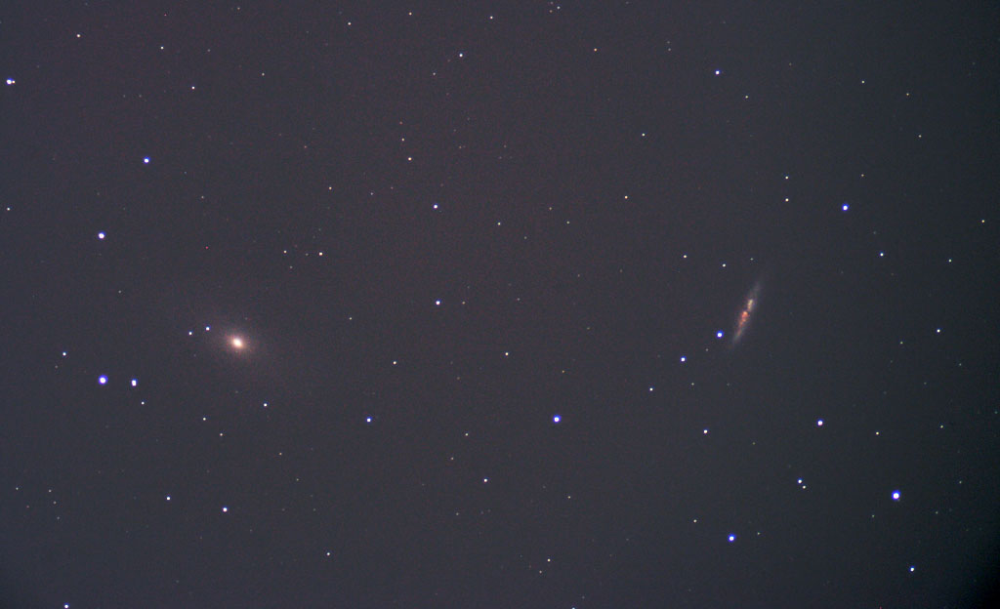

This is a high resolution image of M81 and M82. This is a single exposure of 600 sec (10 min). A Canon Rebel XTi at ISO 400 with a Celestron 80mm refractor was used. It was mounted and tracked on a
Meade 12" LX200 using a Meade DSI ProII for autoguiding.
